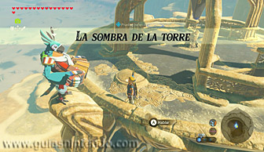
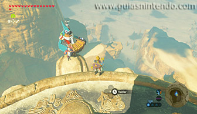
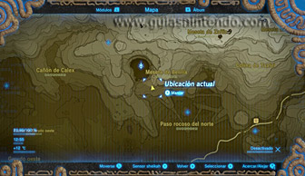
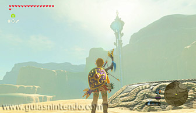
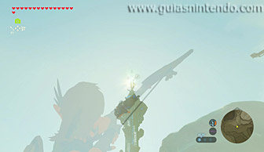
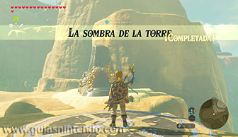
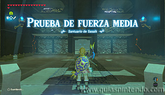
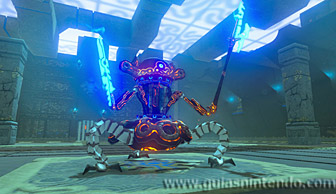
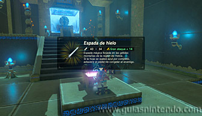

Se encuentra en la región de la torre de Gerudo, pero como está oculto, tendrás que completar la Prueba heroica "La sombra de la torre" para sacarlo a la luz. Para activar dicha prueba debes hablar con un personaje llamado Nyel que estará tocando el acordeón en la cima de la torre de Gerudo.

Para resolver el acertijo que te planteará Nyel deberás situarte en el mismo sitio donde se encuentra él y mirar hacia el sudeste para ver un pedestal al que podrás llegar planeando con la paravela.

Una vez sobre el pedestal tendrás que esperar a que sean entre las 14:55 y las 16:00, momento en el que dicha plataforma empezará a brillar, y después tendrás que lanzar una flecha en dirección al sol que habrá sobre la cima de la torre de Gerudo. De esa manera, completarás la prueba heroica y harás aparecer el santuario.

Dentro del santuario debes derrotar a un miniguardián 3.0, uno de los miniguardianes más poderosos que vas a encontrar en los santuarios de esta región.

Después de derrotarlo dirígete al altar y en el camino podrás abrir un cofre que contiene una espada de hielo. Cuando llegues al altar podrás examinarlo para obtener un símbolo de valía.
